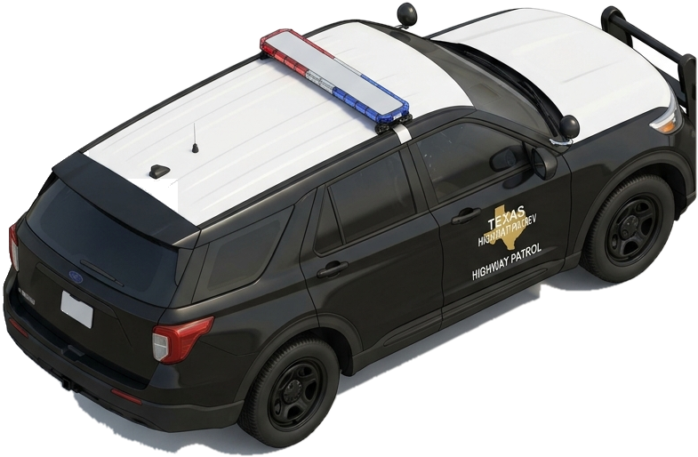

Emergency Vehicles, School Buses & Pedestrians
Texas law establishes strict kinetic and spatial buffer zones around emergency personnel, student transit, and vulnerable road users. Failure to yield in these designated situations triggers zero-discretion criminal sanctions and mandatory fine escalations.




Specialized Yield Protocols
Vacate lane closest to stopped emergency or TxDOT vehicle if safe.
If unable to change lanes, drop speed 20 mph below posted speed limit.
Misdemeanor fine; enhances to Class B if crash causes property damage.
Roadway Topology Protocols
Texas law specifies strict school bus stopping rules based on physical median separation:
Consequences of Failure to Yield
TTC § 545.157: Standard fine; escalates to Class B if crash causes property damage.
TTC § 545.066: Class C fine; 2nd offense within 5 yrs suspends license for 180 days.
TTC § 545.066(d): Passing stopped bus resulting in serious bodily injury is a felony.
When an authorized emergency vehicle approaches with audible siren and flashing red/blue lights, what must you do?
Specialized Stopping Synthesis
Under Texas Transportation Code § 545.156, § 545.157, and § 545.066, emergency and vulnerable road user yields are zero-tolerance safety mandates. Pulling right and stopping for sirens, observing the Move Over law, and stopping for flashing school bus lights protect human lives and preserve driver licensing privileges.